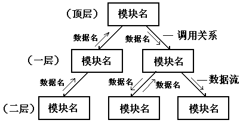
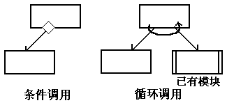
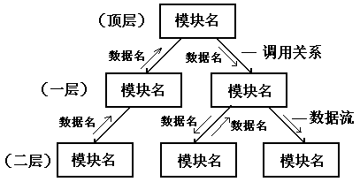
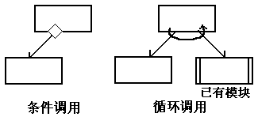

第四章 设计方法
概要设计（或总体设计）的基本任务：
- 将系统划分为模块层次结构
- 决定每个模块的功能、界面和调用关系
4
.3 结构化设计方法常用的系统设计方法
- 结构化设计（SD）方法：与结构化分析方法相结合，以数据流图为基础；
- Jackson 方法：以数据结构为基础，用于设计数据处理系统。
SD方法的基本思想：
- 整个系统由相对独立、功能单一的模块构成。模块之间的相对独立性由块间联系或块内联系来衡量。
SD方法的描述方式：模块结构图

辅助符号：

第四章 设计方法 |
||
| 4.2 概要设计 概要设计（或总体设计）的基本任务：
4 .3 结构化设计方法常用的系统设计方法
SD方法的基本思想：
SD方法的描述方式：模块结构图  辅助符号：  |
||